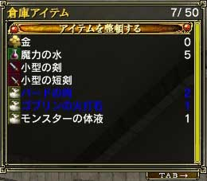

個人ショップに出品できるアイテムは、ホームで倉庫に預けてあるものに限ります。そのために、個人ショップに出品するためにはいちいちホームに戻らなくてはなりません。
ホームに戻ったら、メニュー3ページ目の「倉庫」を選んでください。そこで出品したいアイテムを倉庫に預けます。ちなみにすでに預けてあるアイテムの中で、青文字で表示されているものは出品中のアイテムです。
出品するときには、以下のことに気をつけてください。
・出品できるアイテムであるか(ワープストーンなどのアイテムは無理)
・出品できるアイテムの数に余裕はあるか(12種類までしか出品できません)
・装備品の場合は、耐久力が十分に高いか(40以下だと誰も買わない)
 
(左：メニュー 右：倉庫) |
|